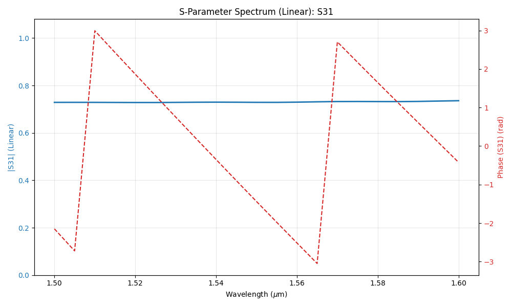
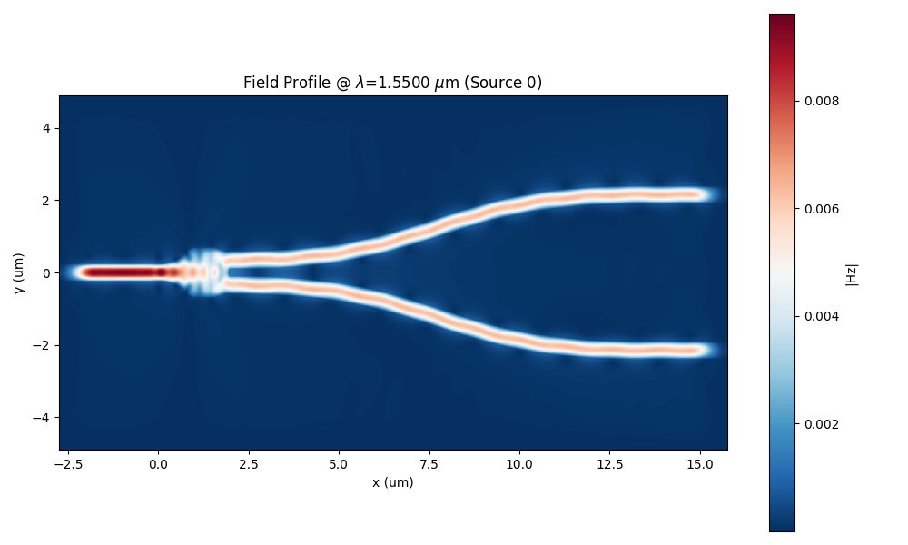
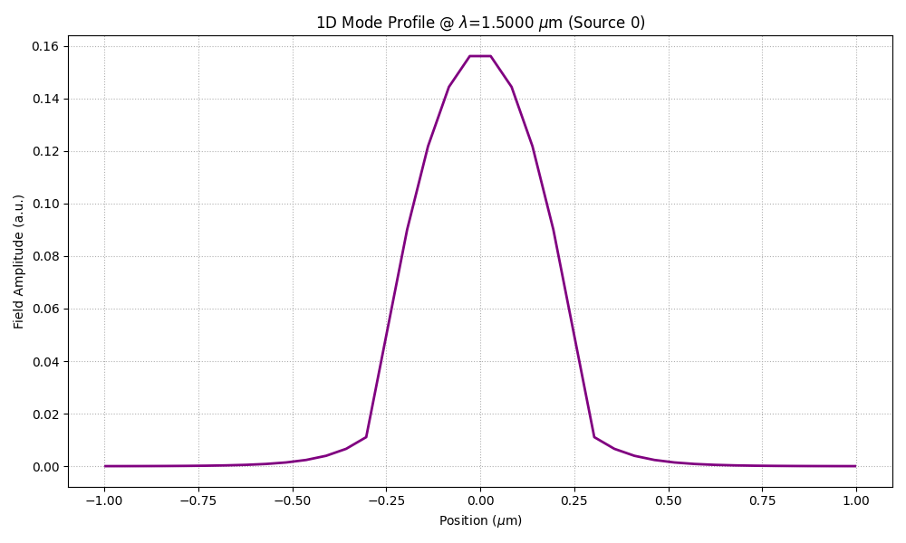

Splitter
For this example we are going to simulate a splitter (splitter.gds) and
then create an image with a DFT monitored field overlapping with the device structure outline.

In this particular example we make use of the DFT Monitor to monitor the frequency content of the fields, so we can plot a particular component and wavelength over the device structure outline. The python script for this simulation is presented in the following code snippet:
from pyOptiShared.DeviceGeometry import DeviceGeometry
from pyOptiShared.LayerInfo import LayerStack
from pyOptiShared.Material import ConstMaterial
from FEMFy.FEFDSolver import FEFDSolver
from pyOptiShared.Simulator import PML_Params, Mesh
import matplotlib.pyplot as plt
import numpy as np
# ==========================================
# 1. Material Definitions
# ==========================================
# Define materials needed for the simulation.
si02_mat = ConstMaterial(mat_name="SiO2", epsReal=1.45**2, color='lightgreen')
si_mat = ConstMaterial(mat_name="Si", epsReal=3.5**2, color='lightblue')
air_mat = ConstMaterial(mat_name="Air", epsReal=1**2, color='lightyellow')
# ==========================================
# 2. Layer Stack Configuration
# ==========================================
# Define the vertical layer structure.
# Even when importing a GDS (which provides 2D shapes), we must map those shapes
# to physical layers with thickness and material properties here.
layer_stack = LayerStack()
layer_stack.AddLayer(name="L1", number=1, thickness=0.22, zmin=0.0,
material=si_mat, cladding=si02_mat,
sideWallAng=0)
# Set background and substrate materials.
layer_stack.SetBGandSub(background=si02_mat, substrate=si02_mat)
# ==========================================
# 3. Device Geometry Setup (GDS Import)
# ==========================================
# Initialize the device geometry object.
device_geometry = DeviceGeometry()
# Instead of using 'SetFromFun', we use 'SetFromGDS' to load an external file.
# - gds_file: Path to the .gds file containing the design.
# - buffers: Padding around the GDS bounding box for the simulation region.
device_geometry.SetFromGDS(
layer_stack=layer_stack,
gds_file="splitter.gds",
buffers={'x': 2, 'y': 1.5, 'z': 1.5}
)
# ==========================================
# 4. Port Settings
# ==========================================
# Configure automatic port detection.
# 'reciprocity' in the solver settings often depends on how these ports are set up.
device_geometry.SetAutoPortSettings(direction='x', min=0, max=0.6, port_buffer=0.8, pad=False)
# ==========================================
# 5. Mesh Settings
# ==========================================
# Configure the finite element mesh size.
fem_mesh = Mesh(dx=0.08, dy=0.08, dz=0.04)
fem_mesh.SetMeshOptions(mode='quiet', gui=False, export=True)
# ==========================================
# 6. Solver Initialization & Boundaries
# ==========================================
fefd_solver = FEFDSolver()
# Initialize PML parameters (using defaults here as no specific args were passed).
pml = PML_Params()
# Apply boundaries to the solver instance.
fefd_solver.SetBoundaries(min_x="pml",
max_x="pml",
min_y="pml",
max_y="pml", params=pml)
# ==========================================
# 7. Excitation Settings
# ==========================================
# Define simulation wavelengths.
lams = np.linspace(start=1.5, stop=1.6, num=3)
# Set excitation parameters.
# 'reciprocity' is set to '1x2', which is typical for a 1-input, 2-output splitter,
# allowing the solver to optimize the simulation run.
fefd_solver.SetExcitation(wavelength=lams,
reciprocity='1x2')
# ==========================================
# 8. Final Solver Configuration
# ==========================================
# Pass all settings to the solver.
# Note the specific resolution, interpolation method, and polarization settings.
fefd_solver.SetSimSettings(
device_geometry=device_geometry,
mesh=fem_mesh,
wavelength=lams,
resolution=1000,
interpolation="cubic",
method='direct',
polarization='TM2.5',
number_iterations=2,
results_path='',
adjoint_info=None,
order=2
)
# ==========================================
# 9. Execution and Visualization
# ==========================================
# Run the simulation.
fefd_results = fefd_solver.Run()
# Visualize results.
# Plot the field specifically at 1.55um wavelength.
fefd_results.PlotField(target_wavelength=1.55)
# Plot port locations and S-Parameters (specifically S31 transmission).
fefd_results.PlotPort()
fefd_results.PlotSParameters(s_param="S31")
S31 Transmission
{kind=link}

Field Profile
{kind=link}

Port Field
{kind=link}
